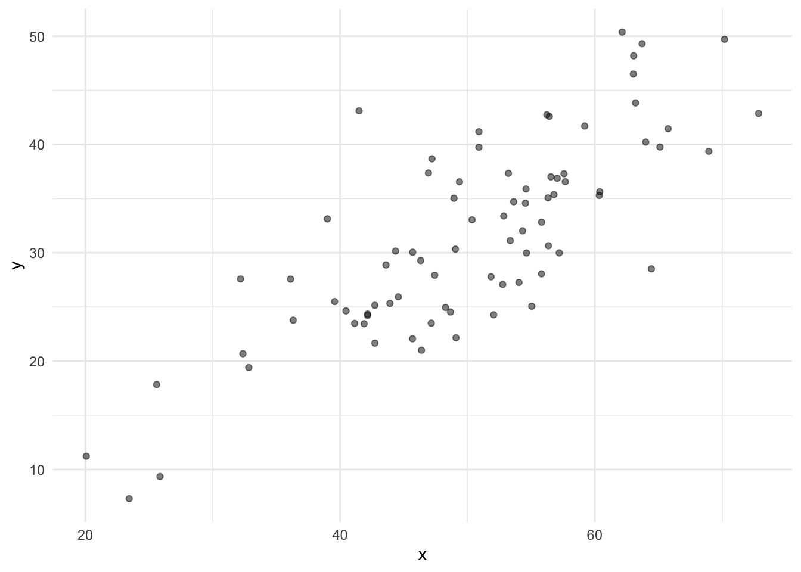
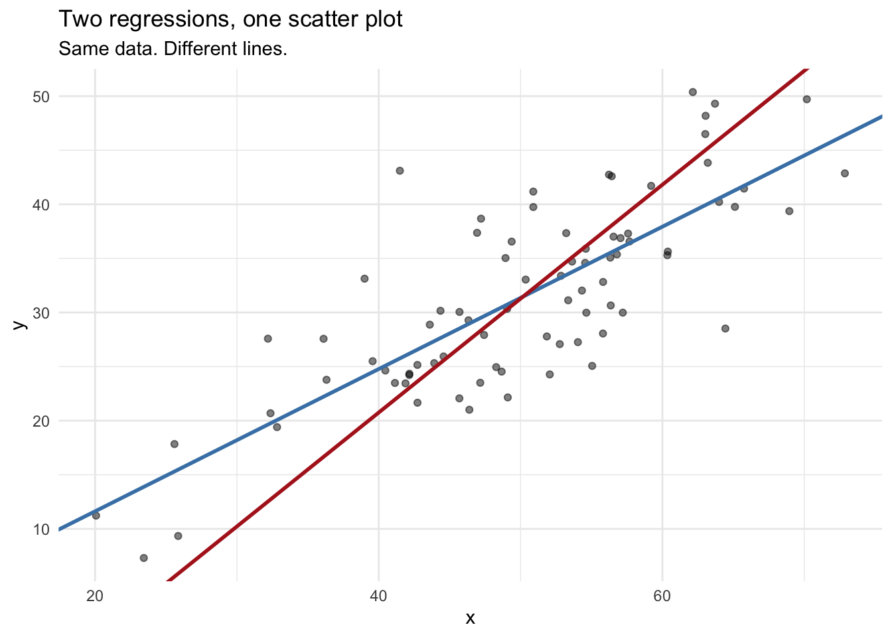

Code
n <- 80
x <- rnorm(n, mean = 50, sd = 10)
y <- 2 + 0.6 * x + rnorm(n, sd = 6)
ggplot(data.frame(x, y), aes(x = x, y = y)) +
geom_point(alpha = 0.5) + theme_minimal()
Before we start talking about autocorrelation, we need to talk about correlation and regression. Not because you haven’t seen them before, but because the two concepts get conflated constantly by students – but also by people who really should know better.
The conflation has a tell. It looks like this: someone makes a scatter plot, right-clicks on it in Excel, and adds a “best fit line.” They didn’t think about whether a line was appropriate. They didn’t ask what question the line is answering. They just added it because it was there. Please do not do this. A scatter plot is complete without a regression line. Adding one implies something about direction, prediction, and causation that you may not actually mean.
One more thing before we start. This aside is about linear association. Pearson correlation measures the strength of a linear relationship between two variables. Linear regression models that relationship with a line. If the underlying relationship is curved, both will mislead you in their own ways – correlation will understate the association and the regression line will be a poor summary of the data. That is a real limitation and worth knowing, but it is a topic for another day. Everything that follows assumes linearity.
Let’s generate a small data set first. Two variables x and y.

Cool? Now let’s get the concepts sorted out. But first, a rule that applies to everything in this aside and most of statistics: plot your data before you calculate anything. Anscombe’s quartet is the classic demonstration of why. It is a set of four datasets with nearly identical means, standard deviations, correlations, and regression coefficients. They look completely different when plotted. One is a clean linear relationship. One is a perfect curve that a line describes badly. One has an outlier that is driving everything. Look them up. The lesson is that summary statistics, including \(r\) and \(\hat{\beta}_1\), can be identical across datasets that have nothing in common. The plot catches what the numbers miss.
Correlation measures the strength and direction of a linear association between two variables. The Pearson correlation coefficient \(r\) is:
\[r = \frac{\sum_{i=1}^{n}(x_i - \bar{x})(y_i - \bar{y})}{(n-1) s_x s_y}\]
It is bounded between -1 and 1. It is unitless. And it is symmetric:
\[r_{xy} = r_{yx}\]
The correlation between \(x\) and \(y\) is identical to the correlation between \(y\) and \(x\). There is no dependent variable. There is no independent variable. There is no implied direction of effect. You are just asking: do these two things move together?
For the data we made above \[r_{xy} = r_{yx} = 0.79\]
Regression is different. When you fit a linear model \(y = \beta_0 + \beta_1 x + \epsilon\), you are making a directional claim. \(y\) is the thing you are trying to predict or explain. \(x\) is the thing doing the explaining. The slope \(\hat{\beta}_1\) tells you how much \(y\) changes, on average, for a one-unit increase in \(x\).
Regression is not symmetric. Regressing \(y\) on \(x\) gives you a different line than regressing \(x\) on \(y\). Let’s show that directly.
To compare these on the same plot, we need to rearrange the second model to express \(y\) as a function of \(x\). We use a and b here rather than \(\hat{\beta}_0\) and \(\hat{\beta}_1\) deliberately. Those are already in use for lm(y ~ x), and reusing them for a model predicting a different variable would invite exactly the kind of confusion we are trying to avoid. Think of a and b as temporary labels for the intercept and slope of lm(x ~ y). If that model gives us \(\hat{x} = a + b \cdot y\), then solving for \(y\) gives \(y = -a/b + (1/b) \cdot x\).

They are not the same line. They will only be the same line when \(|r| = 1\), meaning the data fall perfectly on a line with no scatter at all. In real data, that never happens.
So which line is “the” line? That depends on what question you are asking. If you are modeling \(y\) as a function of \(x\), use lm(y ~ x). If you are modeling \(x\) as a function of \(y\), use lm(x ~ y). If you just want to know whether the two variables are associated, use correlation and skip the line entirely.
When you write \(y = \beta_0 + \beta_1 x + \epsilon\), you are not just describing an association. You are saying that \(x\) belongs on the right side of the equation and \(y\) belongs on the left. That is a claim about structure. It is, at minimum, a claim that you have thought about which variable might be driving which.
This is why regression gets associated with causality even though it cannot establish it. A regression model is consistent with a causal interpretation, but it does not require one and it does not prove one. Two variables can be strongly related through a common cause, through confounding, or through coincidence, and a regression model will fit them all the same way.
There is a real and ongoing debate about this in statistics. For decades the discipline largely avoided causal language, treating everything as “association” and leaving causal inference to subject matter experts. Judea Pearl, among others, argued forcefully that this was a mistake – that researchers need explicit tools for thinking about causality, not just instructions to be careful. The counter-argument is that statistics summarizes data, and causal claims require assumptions about the world that go beyond what data alone can support. Both sides have a point.
Where does that leave you? Here: when you decide to regress \(y\) on \(x\) rather than \(x\) on \(y\), you are making a choice that should reflect your understanding of the system. Correlation requires no such choice. Regression does. And this is one more reason to think twice before adding a best fit line to a scatter plot. That line implies you have made the choice. If you have not thought about it, the line is doing work you did not authorize.
Correlation and regression are related. The slope in a simple linear regression is:
\[\hat{\beta}_1 = r \cdot \frac{s_y}{s_x}\]
The slope is the correlation scaled by the ratio of the standard deviations. That ratio matters. You can have \(r = 0.95\) and a slope of 0.002, or \(r = 0.95\) and a slope of 500, depending on the spread of your variables. Correlation is scale-free. Regression is not.
from_formula from_lm.x
0.657933 0.657933 They match. This also tells you something useful: if you standardize both variables to have mean 0 and standard deviation 1 before fitting, the regression slope equals the correlation coefficient exactly. But in real data with real units, they are different quantities that answer different questions.
This relationship also only holds cleanly in simple linear regression with one predictor. The moment you add a second predictor, the slope on \(x_1\) is no longer a simple function of the bivariate correlation between \(x_1\) and \(y\). It depends on the correlations among all the predictors. Two predictors that are themselves correlated will have slopes that cannot be read off from their individual correlations with \(y\) at all. Keep that in mind when you move to multiple regression.
Both correlation and regression have standard hypothesis tests, and they are not the same test even though they often produce the same p-value in simple regression.
The regression test for the slope tests \(H_0: \beta_1 = 0\). The test statistic is:
\[t = \frac{\hat{\beta}_1}{SE(\hat{\beta}_1)}\]
This is the p-value you see in the output of summary(lm(...)) next to the slope coefficient. When someone fits a regression and reports a p-value, this is almost always what they are testing, whether they realize it or not.
The correlation test tests \(H_0: \rho = 0\), where \(\rho\) is the population correlation. The test statistic is:
\[t = \frac{r\sqrt{n-2}}{\sqrt{1-r^2}}\]
Look at that formula. The only things in it are \(r\) and \(n\). That means the p-value depends entirely on how many observations you have. A correlation of \(r = 0.11\) with \(n = 1000\) will be highly significant. That does not mean the association is strong or scientifically meaningful. It means you had a lot of data.
[1] 0.0004926257Significant. And also \(r = 0.11\), which means \(R^2 = 0.0121\). The predictor explains about 1.2% of the variance in the response. Be careful with the word “significant.”
Here is what to take away from this: